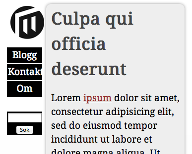

Laboration 5: Media Queries
Som bekant, i synnerhet efter föreläsning 9, är CSS 3 Media Queries en viktig teknik, och möjliggörande för det som kallas Responsive Web Design. Denna laboration går ut på att tillämpa media queries för att förbättra upplevelsen för mindre respektive större skärmar. Det är en god idé att läsa lite om responsive design innan eller i samband med laborationen.
1. Basfallet
I detta fall finns en färdig webbsida, som ser okej ut i "mellanstora" webbläsare. Kika på den här.
Öppna webbsidan och bekanta dig med den. Testa också att ändra bredd på webbläsarfönstret.
Värt att notera om webbsidan:
-
Flexibel layout, med en maxbredd på drygt 900 pixlar (styrs av
#container). -
Två visuella kolumner,
headertill vänster, och#content,asideochfootertill höger. - HTML5-element används alltså en del. (Dock har inte kompabiliteten maximeras, till exempel genom att använda html5shiv.)
- Några bonusegenskaper från CSS 3: typsnitt, tonad bakgrund, rundade hörn, skuggor.
2. Brytpunkt: smal skärm
Nu är det dags att börja med media queries. Spara HTML- och CSS-fil så att du kan följa med.
 Webbplatsen är inte lättläst om webbläsaren är för smal. Någonstans kring 480 px bredd verkar det lämpligt att övergå från två kolumner till en. Det viktiga beslutet är hur det ska se ut istället. Ska logotyp och navigation ligga överst (samma eller ändrat utseende?), eller ska innehållet vara i fokus. Du kan välja själv vilka förändringar som passar - men för enkelhetens skulle används den första varianten nedan.
Vår media query (vilket är något osnygg svengelska...), kan se ut såhär, och är lämplig att placera längst ner i stilmallen:
@media screen and (max-width:480px) {
}
För att "bli av" med kolumnerna behöver vi återställa egenskaperna float och width. Detta är en bra utgångspunkt för minsta anpassningen (placer innuti ovanstående @media-block, alltså):
header, #content, aside, footer{
float:none;
width:100%;
padding:0;
}
header{
margin-bottom:2em;
}
Testa detta, med mer eller mindre brett webbläsarfönster. Och lägg för all del till fler förändringar som du tycker passar.
viewport
Brytpunkt: bred skärm
över 920 px händer det inte så mycket